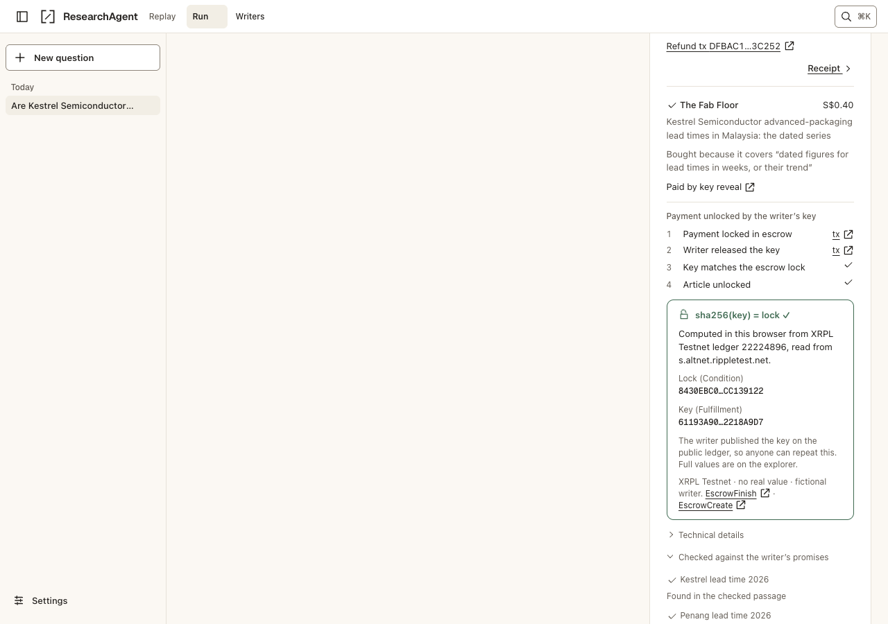
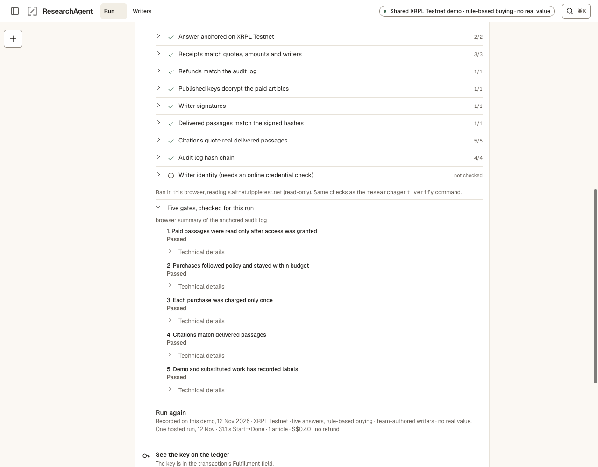

The Fast and the Fungible · SingHacks finals · SFF 2026
Progress since SingHacks · 19–20 Sep 2026
From a prototype to a verifiable research wallet
At SingHacks
One web page. Synthetic sources. A person approved each quote; simulated payments were the default.
Today
Real documentation as sources. Payments tied to the article key, re-read from a public node for every one of 1,000 purchases. Agents connect by URL.
347merged pull requests since 21 Sep
15published releases
61recorded ledger transactions
224shared verifier cases
Evidence snapshot · 13 Nov 2026
Creativity · Feasibility
Real sources, and reports signed to a ledger
Free tier: the real docs
12,104 passages from the XRPL and x402 documentation, each cited by its real page URL, with licences and upstream versions pinned.
Paid tier: ledger analytics
Reports on RLUSD supply and holders, the RLUSD/XRP pool and project accounts, each signed “as of validated ledger N”. Check one on the public explorer.
No fictional writers
The real-content profile leaves out all eight sample publishers. Writer provenance sits on each writer’s badge.
The agent cites a passage by its original page, or by the ledger it was computed from.
Write a note, pass moderation and go live in 12.4 s. A verified sale followed after 34.5 s, measured locally.
Moderated before it sells
Prechecks catch secrets, seed phrases, contact details and spam, and an operator approves each note.
Regulated mode, available as a mode
Credentialed writers only, a pinned OFAC XRP address screen, and every zero-charge refusal recorded in an audited log. Optional, and off on the hosted demo.
Policy budgets, hash-chained audit history and offline receipt checks make the spending path inspectable.
One question, one budget, and only code can spend it
1AskSet a question and budget.
2ConfirmA five-second plan sheet.
3SearchFree abstracts and signed promises.
4DecidePolicy rules decide purchases.
5PayLock payment in native escrow.
6VerifyCheck delivery and cite passages.
Five hard gates
No premium bytes before a grant.
Only policy code spends, within the budget.
One charge per intent, across retries and restarts.
Real citations to delivered passages.
Simulated or substituted work is labelled.
README · Hard guarantees · policy and purchase regression tests
Creativity · Technical depth
The article key releases the writer’s payment
The writer encrypts the article and signs its promises.
Policy locks payment to the article’s key hash.
The writer publishes the key to collect payment.
The app grants access after ledger validation.
Your browser checks the published key against the escrow lock.
Opt-in holdback: 20% of the price waits in a second escrow. Your policy releases it when the promise checks pass, or takes it back after a deadline, with no writer cooperation. 17 real purchases: 11 released, 6 refunded.

Local replay of a recorded escrow · fictional writer · public-node key check, 11 Nov.
1,000real purchases, each re-read from a public nodeAn independent script checked every transaction. Median 20.3 s end to end. Anyone can repeat the check with one command.
210,480protocol states checkedNo violation, and all seven deliberately seeded bugs caught.
1,000,000simulated crash and retry schedulesRun against the real purchase code: no violation.
34attacks on the local stackNo breach.
Paid notes help: on 100 XRPL and x402 questions, correct answers rose from 31 with free docs alone to 48 with paid notes.
docs/evidence/proof/ · the purchase run and its verifier
Reachability
Connect your agent by URL
MCP over HTTP
Paste one URL. One-click add for Cursor, VS Code and Claude; Claude Code takes one command.
Sell over x402
Express, Hono and FastAPI packages add key-reveal delivery to any paid endpoint. A separate Python buyer completed a real purchase.
Sell with a package
Express, Hono and FastAPI packages add key-reveal delivery. A separate Python buyer completed a purchase and an expiry cancellation against one.
SDKs and verifiers
TypeScript and Python can ask, stream and verify, with separately written receipt checkers.
Agent hires agent
ResearchAgent researches for a caller and pays cited-writer royalties.
An x402 scheme
A key-reveal escrow scheme for x402 is drafted for upstream.
Or run it all from one package command. Recorded release run, 11 Nov: fixture models and sample writers; terminal output is preserved in the evidence file. The calling model cannot raise budget caps.
Recorded package run · docs/submission/evidence/v1.1.1/try-output.txt · docs/evidence/reach/REACH.md
Technical depth · Reachability
One hosted run. All five gates held.

Recorded hosted run · 12 Nov.
Browser / published TypeScript: 24 passed, 0 failed, two not checked.
Published Python: 25 passed, 0 failed, two skipped.
Paid passages were read after access was granted.
One article for S$0.40 in 31.1 s Start→Done, excluding planning and the modal.
This run used live DeepSeek planning/final writing, an initial draft from recorded extracts and keyword search. Policy rules decided purchases.
Ripple’s official RLUSD issuers have escrow locking switched off on both networks. Unsigned probes return tecNO_PERMISSION; the matched stand-in token succeeds. We show the verdict before anyone signs.
Batch success can mislead
A Batch makes two escrows atomic, but the outer transaction reports success even when its inner transactions roll back.
Delegate one permission
A visitor can let a service create escrows and nothing else, then revoke it.
Five upstream items with transaction hashes and three patches are ready to file. 7 ranked findings with runnable repros · 35 documented issues · 15 submissions on 4–5 Sep · 8 earlier upstream drafts, 0 filed.
Guruprasath · product and engineering Miul · research-plan contracts and test harness Andrew Nguyen · initial idea briefs and data sources
Development network only; mainnet signing disabled. No outside customers, pilots or revenue; the 1,000 purchases are scripted repeats of one team-authored note. Demand is not yet validated.
Signed submission can expose the key before validation; escrow stays claimable until the escrow deadline. Key reveal proves delivery, not quality.
Only the holdback share is refundable without the writer; the key-release payment stays paid. No-show recovery needs ledger-confirmed escrow cancellation after the deadline.
Records include accepted operator-issued Credentials and an operator-issued Permissioned Domain. Operator identity is not KYC, quality or payment permission. Shared payer and visitor caps; cold installs depend on npm and faucet latency.
Registry publication, Mac signing, regulated custody, business identity checks and licensing work remain; the OFAC screen is one dated address list, not a clearance. Run-specific substitutions are labelled with their evidence.